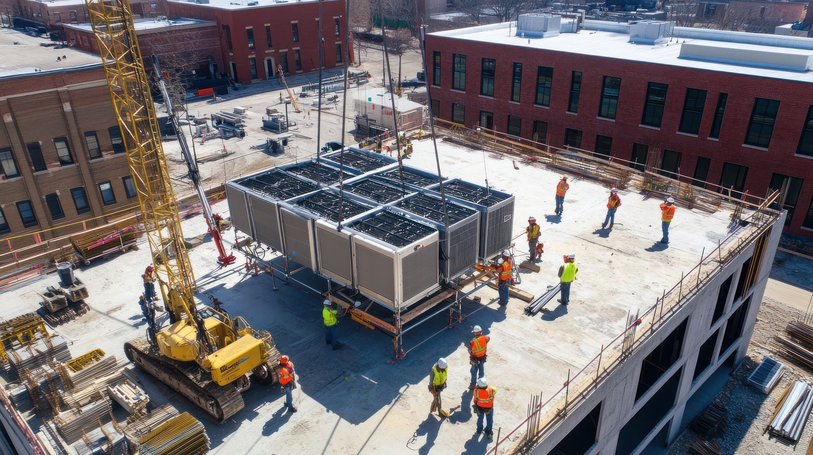
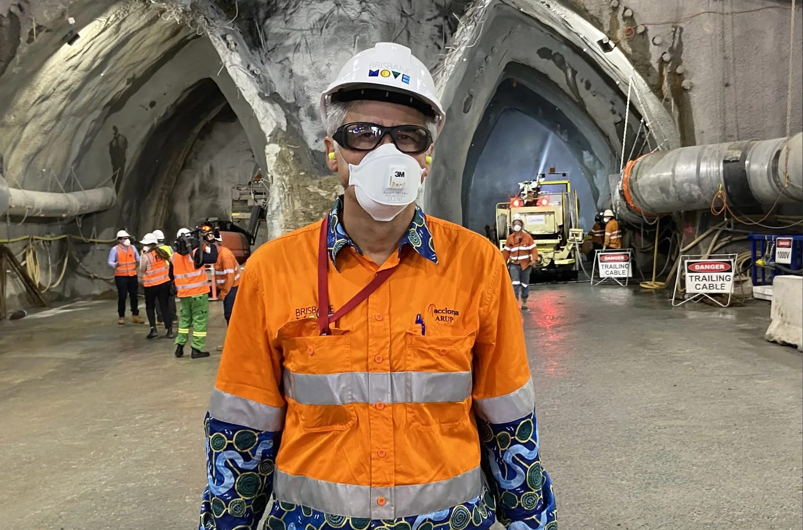

What Is An Operational Digital Twin?
 June 26
June 26 Solution
Solution
Executive Summary
Most organisations already have access to operational data.
What they often lack is a clear understanding of how operational activities interact across the environment.
An Operational Digital Twin helps solve this challenge by creating a live operational representation of the operation, combining workforce activity, equipment, vehicles, environmental conditions, production systems and operational technologies into a shared operational view.

Unlike traditional digital twins that focus on physical assets,
an Operational Digital Twin focuses on understanding operational activity and supporting better decision-making.
The Evolution Of Operational Visibility
Operations have become increasingly connected.

Workforce systems track personnel

Fleet systems track vehicles

Production systems monitor performance

Environmental systems monitor changing conditions
Operational technologies generate vast amounts of information
While these systems provide valuable visibility, they often operate independently.
This creates fragmented understanding.
Operational teams must move between systems to understand what is happening.
Operational teams must move between systems to understand what is happening.
The challenge is no longer collecting data.
The challenge is creating operational understanding.
Creating A Live Operational Understanding
An Operational Digital Twin creates a live operational representation of the environment by bringing together information from across the operation.
This includes:
By combining these elements into a shared operational environment, organisations gain a clearer understanding of operational conditions as they evolve.
More Than A Map
Many organisations initially view Operational Digital Twins as advanced mapping systems.
In reality, the map is simply the visual layer.
The true value comes from understanding the relationships between operational activities.
For example:
Understanding these interactions provides a much clearer picture than viewing each event independently.
The Future Of Operational Intelligence
The Operational Digital Twin forms the foundation of Operational Intelligence.
It provides the context required for:

Fatal Risk Intelligence
Production Intelligence
Workforce Operations
Fleet Operations
Environmental Intelligence

Executive Visibility
By creating a shared operational understanding, organisations can improve safety, productivity and operational performance.